<script type="application/ld+json">
{
  "@context": "https://schema.org",
  "@graph": [
    {
      "@type": "Organization",
      "@id": "https://www.edgeofliberty.us/emilys-ceramics/#org",
      "name": "Emily's Ceramics",
      "url": "https://www.edgeofliberty.us/emilys-ceramics/",
      "description": "Unique handmade pottery, serving pieces, décor, and artisan ceramics",
      "image": "https://www.edgeofliberty.us/emilys-ceramics/00_741427497_852266411067728_6712222397365636745_n.webp",
      "email": "dyrek.emily@gmail.com",
      "areaServed": {
        "@type": "City",
        "name": "Valparaiso, Indiana"
      }
    },
    {
      "@type": "BreadcrumbList",
      "itemListElement": [
        {
          "@type": "ListItem",
          "position": 1,
          "name": "Home",
          "item": "https://www.edgeofliberty.us/"
        },
        {
          "@type": "ListItem",
          "position": 2,
          "name": "Emily's Ceramics",
          "item": "https://www.edgeofliberty.us/emilys-ceramics/"
        }
      ]
    }
  ]
}
</script>
<section class="vendor-page">
<h1>Emily&#x27;s Ceramics</h1>
<div class="vendor-content">
<p class="vendor-lead">Unique handmade pottery, serving pieces, décor, and artisan ceramics — find Emily&#x27;s Ceramics at The Edge of Liberty Craft Fair in Valparaiso, IN (Northwest Indiana).</p>
<p>Homemade ceramics bowls, mugs, charcuterie boards, jewelry, trinket dishes and more.</p>
<p></p>
<p>Discover one-of-a-kind ceramic creations that blur the line between art and function. From hand-built bowls, mugs, charcuterie boards, and trinket dishes to sculptural vessels, candle holders, and decorative pieces, each item is individually crafted and glazed by hand. Inspired by nature, texture, and organic forms, these pieces feature rich colors, intricate details, and shapes that make every creation truly unique. Whether you’re looking for a statement piece for your home or a functional work of art you’ll use every day, you’ll find something special at this booth.</p><h3>Contact & Links</h3>
<ul>
<li><a href="mailto:dyrek.emily@gmail.com">Email</a></li>
</ul>
<div class="vendor-dates">
<h3>Find us at these craft fair dates</h3>
<ul>
<li><a href="/september-20-2026/">September 20, 2026</a></li>
</ul>
</div>
<h3>Gallery</h3>
<div class="vendor-photos constrained-gallery">
<div class="vendor-masonry">
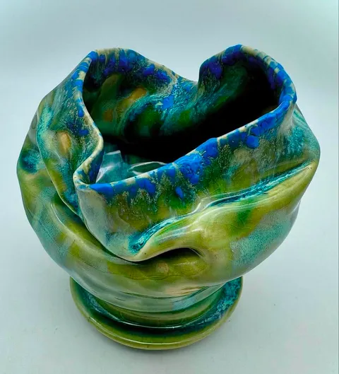
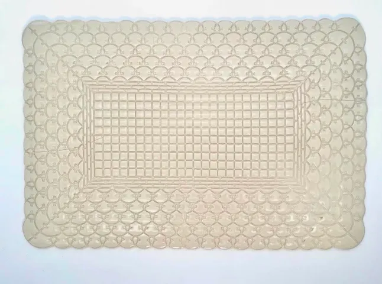
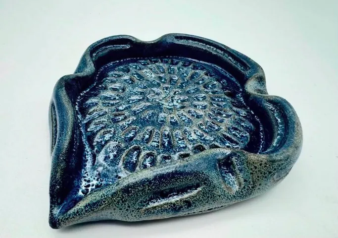
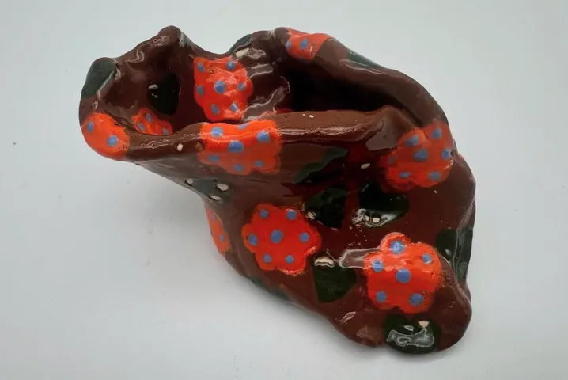
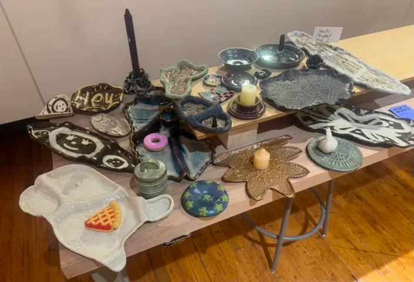
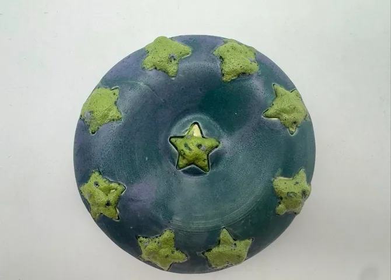
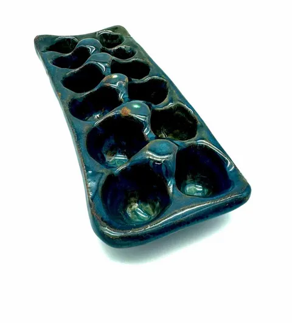
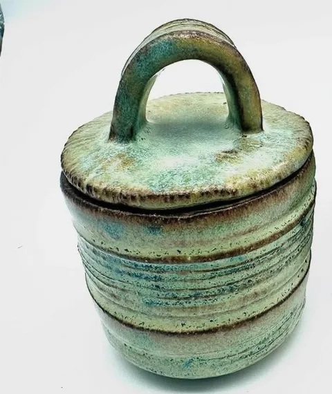
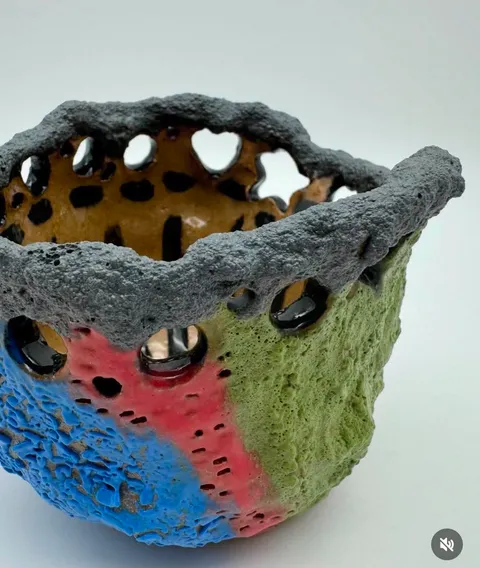
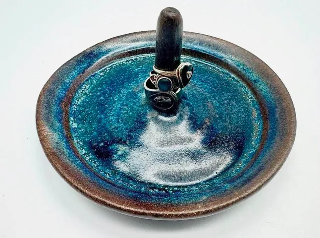
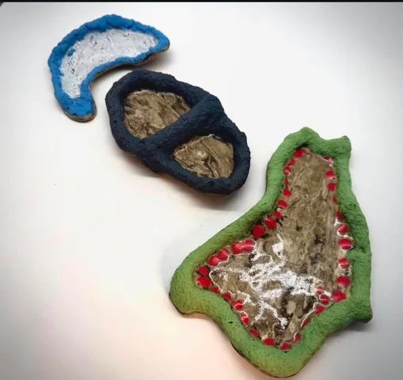
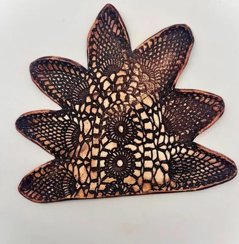
</div>
</div>
</div>
</section>
